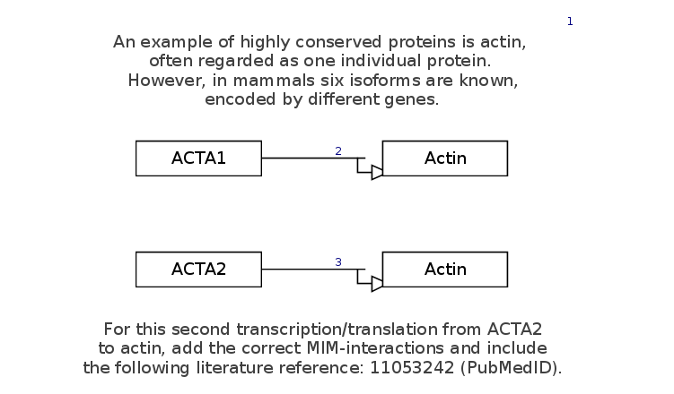

Background
Genes are transcribed into proteins, with Alternative Splicing as a regulatory mechanism controling the functioning of proteins. Source: Kyu Kim et al. 2018 As an example, we will look at Actin, consisting of six different isoforms with only minor variants between their amino acid sequences, yet distinct cellular functions. Source: Perrin and Ervasti, 2010
Your Mission
Draw the interaction depicted in this figure, including annotating the interaction with the given PubMed ID:
- Download the starter pathway here: draw-transcriptiontranslation-start.gpml.
- Launch PathVisio and open the dowloaded file or your draft pathway file via File > Open.
- Perform the challenge tasks:
- Select the Transcription-Translation interaction from the MIM interactions panel or the toolbar.
- Click on the canvas to place the object.
- With the interaction selected, drag the ends (yellow squares) to depict the Transcription-Translation from the GeneProduct (left) to the Protein (right).
- The interaction is correctly connected, if the block at the ends of the interaction (yellow) overlap with the side of the DataNodes (red) and light up green.
- Add the PubMed ID provided (11053242) to the Transcription-Translation interaction under "Literature, New reference" (similar menu to DataNodes).
- Done!
- When you have completed the challenge, save your work as a GPML file under File > Save As.
- Drag-and-drop the GPML file below to check if it is correct.